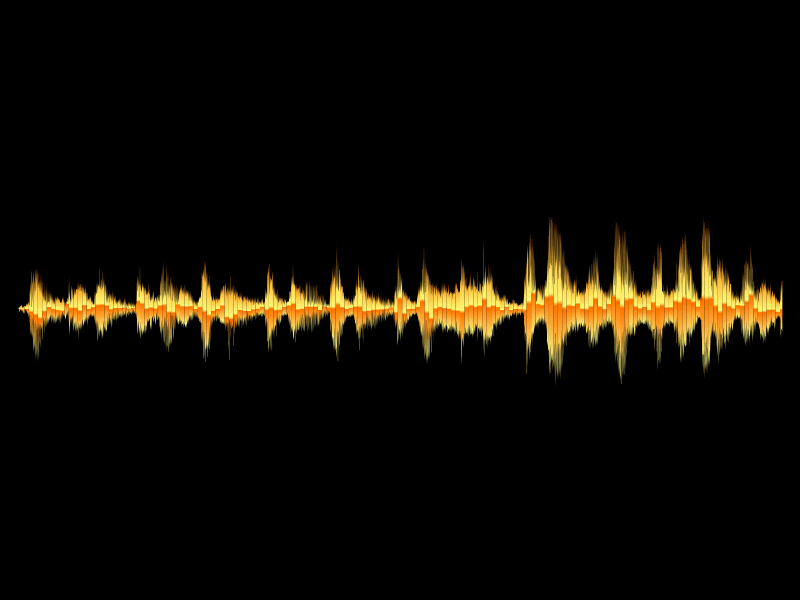

Sound Pack for Minetest
Description
A Minetest mod that provides a set of free sounds & methods. It is intended as a more universal method for adding sounds to games rather than depending on MTG & default for sounds only.

Licensing
Sound file sources & licensing:
See sources.md
Usage
Replacement for default
If your mod depends on default for node sounds only, then you can easily switch to sounds. Simply add default & sounds as optional dependencies in your mod.conf. sounds overrides methods used by default to its own. For example default.node_sound_dirt_defaults.
Example of overidden method:
function sounds.node_dirt(tbl) tbl = tbl or {} tbl.footstep = tbl.footstep or {name="sounds_dirt_step", gain=0.4} tbl.dug = tbl.dug or {name="sounds_dirt_step", gain=1.0} tbl.place = tbl.place or {name="sounds_node_place_soft", gain=1.0} sounds.node(tbl) return tbl end default.node_sound_dirt_defaults = sounds.node_dirt
Example of setting node sounds:
minetest.register_node("foo:bar", {
description = "Foo Node",
sounds = default.node_sound_stone_defaults() -- this is the same as calling sounds.node_stone()
...
})
Playing Sounds Manually
SoundGroup instances are objects for storing & playing sounds. These objects can be called to play a sound from their group. An index can be specified when called to determine which sound to play. If the index parameter is omitted, a random sound will be picked. A table of arguments can also be passed. This is compatible with SimpleSoundSpec.
Creating SoundGroup objects:
local s_group1 = SoundGroup({"sound1", "sound2"}) local s_group2 = SoundGroup({"sound3", "sound4", "sound5"}) -- SoundGroup objects can be concatenated with the arithmetic operator local s_group3 = s_group1 + s_group2 -- to prevent sound file names from being prefixed with "sounds_" when played, theno_prependfield must be set totrues_group1(2) -- plays "sounds_sound2" s_group1.no_prepend = true s_group1(2) -- plays "sound2"
There are many pre-defined sound groups.
Calling a SoundGroup object:
-- play random sound from group
sounds.horse_neigh()
-- play specific sound from group
sounds.horse_neigh(2)
-- play random sound from group with parameters
sounds.horse_neigh({gain=1.0})
-- play specific sound from group with parameters
sounds.horse_neigh(2, {gain=1.0})
-- the play method is the same as calling the object directly
sounds.horse_neigh:play(2, {gain=1.0})
Node Sounds
SoundGroup objects can also be used in node registration:
minetest.register_node("foo:bar", {
description = "Foo Node",
sounds = {
dig = sounds.cow_moo, -- a random sound from the sounds.cow_moo group will be played when digging this node
},
...
Currently using SoundGroup for node sounds only works for "dig", "dug", & "place".
SoundGroup objects are tables & are indexed by integer. But using the get method is more reliable as it will return the string name with "sounds_" prefix if no_prepend isn't set:
local s_group1 = SoundGroup({"sound1", "sound2"}) local s1 = s_group1:get(1) -- returns "sounds_sound1" local s2 = s_group1[2] -- returns "sound2" local s_group2 = SoundGroup({"sound3", "sound4", no_prepend=true}) local s3 = s_group2:get(1) -- returns "sound3" local s4 = s_group2[2] -- returns "sound4"
The built-in type function can be used to check for a SoundGroup instance:
if type(s_group1) == "SoundGroup" then s_group1() end